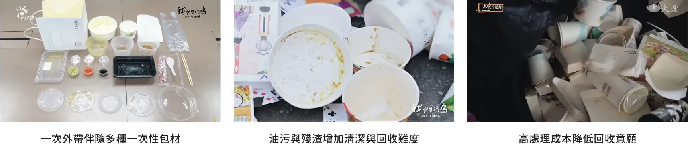
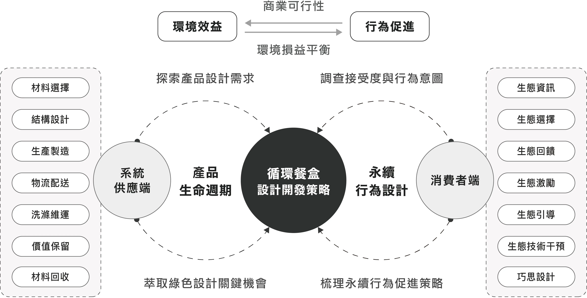
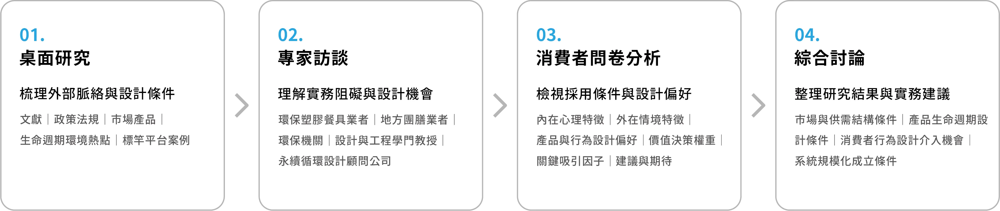
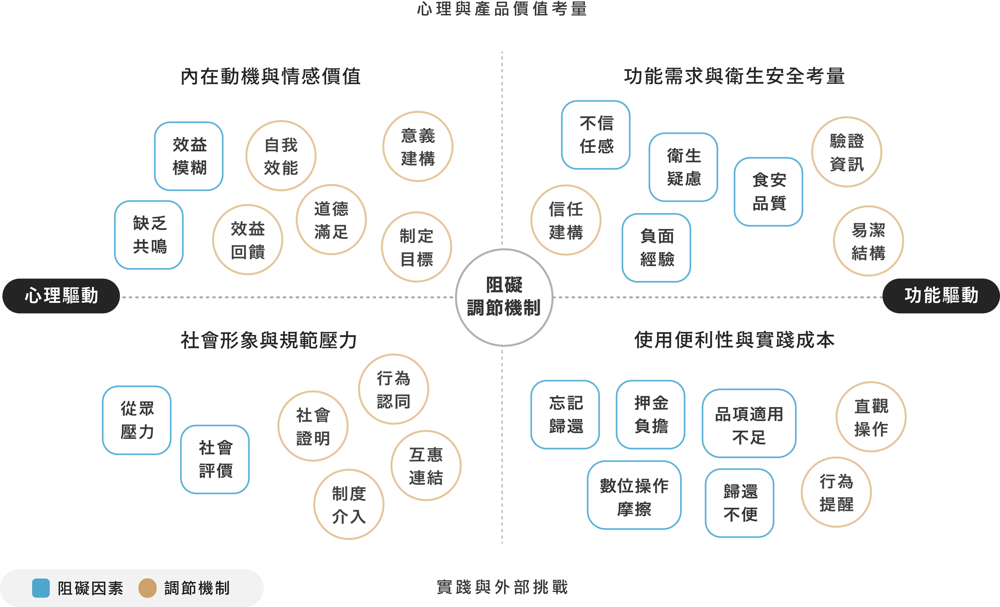

CONTEXT
外帶便利的另一面，是大量一次性包裝與回收負擔
2023 年台灣餐飲業營收突破新台幣 1.02 兆元。隨著外帶與外送愈發便利，店家為維持餐點品質，投入了更多一次性包材。環境部統計處 (2024) 指出，台灣 2023 年一般廢棄物總量已達 1,158 萬噸，其中盛裝食物的紙容器，年消耗量推估約高達 82 億個。
紙餐盒為了防油、防漏，表面覆有塑膠淋膜；使用後殘留的油污與殘渣，提高了後續挑揀、清潔與紙塑分離的難度。相較一般紙製品約 20 秒的散漿處理，紙容器的清洗與分解需耗時 40 分鐘，耗水與耗電量更增加約 1.5 倍；高昂的回收成本，使大量紙容器只能流入焚化處理 (大愛電視，2021)。
FRAMEWORK
從產品生命週期與消費者採用條件，理解循環餐盒的設計需求
相較一次性包裝，循環餐盒在特定生命週期條件，使用約 10 至 15 次後，其環境效益方能超越一次性容器 (Hitt et al., 2023; Rethink Plastic, 2023)。然而，McKinsey 預估至 2030 年，全球循環包裝市場占比僅約 5% 或更低，其中外帶餐飲循環容器仍處於發展初期 (Feber, 2022)。
Consumers International and GlobeScan (2023) 針對 31 國、近 30,000 位消費者的調查顯示，雖有 94% 大眾支持綠色經濟轉型，但實際永續行為仍受限於心理障礙、社會規範、經濟成本、便利性與資訊落差等因素影響。
另一方面，循環經濟的落實亦高度仰賴利害關係人的協作、標準化流程、產品適應性，以及維修與價值保留等條件 (Bocken et al., 2016; Den Hollander et al., 2017; Lacy et al., 2020)。現有循環餐盒設計仍缺乏整合產品、供應鏈與消費者需求的設計原則與權衡依據。
故本研究以綠色設計作為核心原則，經由「產品生命週期」框架，探索餐盒在設計、製造、運輸、使用、清潔與回收等環節的實務挑戰與設計需求；並從「永續行為設計」理論，關注影響消費者採取循環行為的內外部驅動因素，探討不同資訊、選擇、回饋、激勵、引導與干預等行為策略，對消費者接受度與長期使用意願的影響。最後整合供應端與消費者端的設計需求，提出循環餐盒設計開發策略，期望為相關產業提供可操作性的設計指引。

RESEARCH
從桌面研究、專家訪談到消費者分析，逐步形成設計判斷與實務建議
採用混合研究方法，透過桌面研究整理文獻、法規、市售產品、政策介入模式與標竿平台案例，建立問題脈絡與初步設計條件；再訪談 7 位專家，理解實務限制與設計機會，形成初步設計準則。
後續以問卷與開放題文本分析，檢視消費者的知覺風險、產品偏好與行為策略接受度。最終綜整各階段研究結果，進一步討論 (1) 市場供需的結構條件；(2) 產品生命週期的關鍵設計條件；(3) 消費者採用阻礙與設計介入機會；(4) 循環系統規模化運作的成立條件。

採用阻礙因素盤點
從消費者研究拆解循環包裝的採用條件
檢索 2018–2025 年循環包裝與重複使用容器的消費者研究，拆解影響採用的知覺風險、便利性、行為成本、社會規範與採用意圖等因素。進一步歸納為阻礙因素與調節機制，作為後續訪談與問卷設計的觀察基礎。

法規與市場產品研究
從法規要求與市售產品，界定循環餐盒的設計條件
從衛福部食品器具相關規範，界定食品安全與清潔底線；再從市售產品分析，整理材質、結構、製造與回收管理等設計特徵，作為後續產品設計條件建構的基礎。
判讀生命週期衝擊熱點
從既有量化 LCA 研究，辨識系統邊界與衝擊熱點
檢索循環容器相關的量化生命週期評估 (LCA) 研究，辨識不同生命週期階段的環境衝擊熱點與關鍵限制，並整理對應的設計原則。
政策介入框架歸納
從國際政策與循環容器推動趨勢，整理循環系統的推動機制
比較歐洲、美國、亞洲與台灣的循環容器政策案例，從包裝與塑膠稅制、EPR 制度、餐飲服務業再利用義務規範，以及補助與市場能力建構等面向，歸納循環容器系統推動的政策介入框架。
標竿平台案例分析
從國內外循環餐盒平台，梳理產品與系統設計的具體做法
比較國內外代表性的循環餐盒平台，從容器設計、營運模式與技術整合、歸還模式與信任制度三個面向進行案例分析，再依材質、結構、消費者端與商家端租借模式、物流與清洗維運、數位追蹤及信任溝通等面向，梳理 13 項產品與系統設計作法。
設計開發準則建構
將循環餐盒各階段的必要條件、摩擦與風險，整理為設計回應
整合前期研究與專家實務觀點，將各生命週期階段涉及的必要條件、摩擦與風險，整理為設計開發準則，供後續產品與系統規劃者辨識設計條件，作為規劃方向的參考。
消費者統計與文本分析
從偏好差異，判斷介入策略的優先性與適用條件
將「循環餐盒設計開發準則」轉化為接受度量表與偏好排序，比較各項設計策略之接受程度、相對優先序與偏好異質性；並採用分量迴歸分析，檢視不同行為介入策略在環境意識、內在動機、知覺風險與社會影響等不同程度下的作用差異，藉以辨識哪些策略具較一致的介入潛力，哪些對特定內外在行為條件的消費者更值得優先考慮。
此外，針對開放性問答進行詞頻與共現網路分析，捕捉封閉題項未預設的關注點與延伸脈絡。

INSIGHT
綜整研究分析與討論，節錄較具設計與營運意義的發現與建議。完整分析與討論可參見論文第五章。
依餐食特性設定密封、透氣與操作安全條件
熱食若過度密封，容易因悶氣導致餐點口感變質，或因內部蒸氣壓力造成蓋體彈開的安全隱患。因此，餐盒設計建議採用「洩壓孔」或「通風蓋」，平衡密封與透氣需求；湯類熱食則需將「抗傾倒」與「高密封性」視為剛性條件，若採用不鏽鋼等高導熱性材質，則應進一步考量隔熱結構與提把等操作安全設計，以降低燙傷風險。
塑膠材具營運優勢，不鏽鋼則具較高的初始偏好
聚丙烯 (PP) 在耐用度、重量與成本之間取得良好平衡，為現行循環餐盒系統的主流材料。惟研究排序結果顯示，受試者整體偏好「不鏽鋼」材質，其次為「再生材質」(如 rPET、生質 PP)，反映塑膠材在消費者初始知覺上，可能與熱穩定性、化學物質遷移等健康疑慮存在較高的知覺風險與信任落差。
消費者對循環餐盒的採納阻礙，根源於系統認知與掌控能力匱乏
研究顯示，消費者對衛生疑慮本質為對「無法預知他人使用行為、清潔過程不可見、材料反覆重用的安全性」等不確定性焦慮，放大潛在風險感知；便利性阻礙，則來自「搜尋歸還點、額外攜帶與歸還、押金」等過高的系統交易成本，在決策當下壓倒初始的行為動機。
在設計策略上，「外部機構標章」對高內在動機族群，可作為價值權證的信任背書；「參與者經驗分享」則在不同內在動機族群皆具提升效力，但隨分位數提升而遞減，反映外部成功經驗參照，對低內在動機族群更具提升行為可及性的信心。
社會可見性可形成嘗試吸引力，可見行動貢獻則支撐持續參與
開放性回饋中，「外觀／設計」與「聯名／合作」相關詞頻共 43 次，顯示當循環餐盒具備展示性、討論度與自我表達等「社會可見性」(Social Visibility) 功能時，有助於提升消費者初次嘗試的吸引動機。
在持續參與方面，消費者內在動機多源自「群體價值認同」及「可見的行為貢獻」，並與生態回饋 (Eco-feedback) 策略具較顯著的關聯作用。建議將循環實踐設計為具社會參照的正向回饋。
敘述統計中，「累積使用的總體貢獻」(M = 4.15) 與「提供預期效益目標」(M = 4.04) 呈較高偏好；分量迴歸亦顯示，「正向的社會影響力表現回饋」在不同內在動機程度下皆具作用效力；「遊戲化設計」將行為貢獻轉化為虛擬資產的累積與展示，則較能強化「中、高內在動機」群體持續投入意圖。
去中心化清洗作為擴張前期的過渡性策略
在系統營運初期，尚未達到規模經濟且資本支出受限時，採取「去中心化」清洗，善用合作餐廳既有的洗滌設施與營運餘裕進行在地清洗與重用，以降低運載規模不足、路線分散所造成的單位成本與外部協調負擔。
然而，隨據點密度與使用量增加，系統應逐步轉向「集中式清洗」，以維持長期品質控管。集中處理模式雖因逆物流運輸增加溫室氣體排放，但規模化的清洗周轉，能有效攤提單位容器的能源與水資源使用成本，並維持一致的清潔標準建立消費者對系統衛生品質的信任；同時，減輕熱點商家的倉儲與洗滌負荷。將清洗責任從餐飲業者端移出，也有助於降低額外清潔勞務造成的導入負擔，提升商家參與意願。